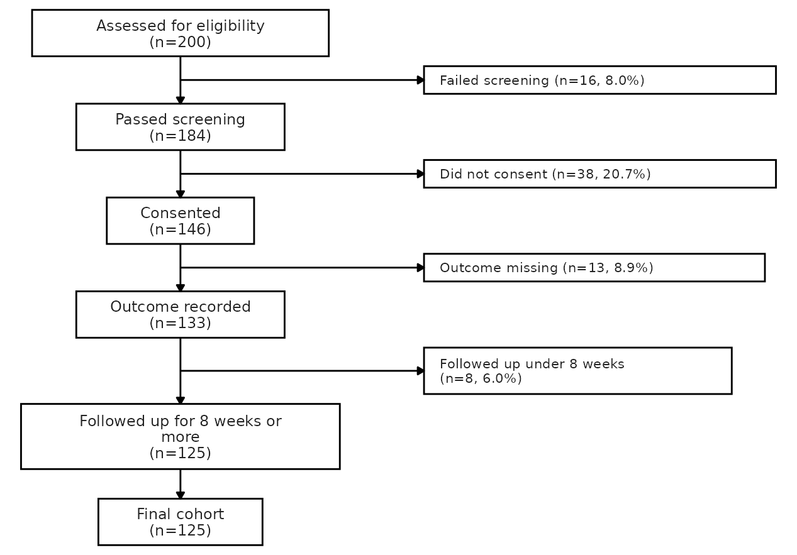

Staged pipelines and missing units
Source:vignettes/articles/staged-pipelines.Rmd
staged-pipelines.RmdReal eligibility rarely happens in one pass over one tidy table. This article covers three situations the basic workflow doesn’t:
- Units that never appear in the data. Someone was invited but has no record, so they are silently missing from the denominator.
- Eligibility assessed in stages. Some criteria can only be checked after data is collected later, such as an outcome or a processed measurement.
- Looking at the cohort part-way through, or keeping every row with a flag instead of filtering.
Units with no record: cf_expected()
apply_criteria() starts from the rows in your data. A
unit with no row at all, such as an invited participant who never
returned a form or a scheduled visit that was never logged, is not
counted anywhere. Often that is the largest loss in the study, and it is
invisible.
cf_expected() lists the units that should
exist. Passed as expected, it is joined to the data before
any step runs, so missing units appear as empty rows that the first step
can count.
Here 220 people were invited, but the data has records for only 200:
dat <- mock_parallel_rct(n_participants = 200, seed = 5)
invited <- cf_expected(participant_id = sprintf("P%04d", 1:220))
crit <- cf_criteria() |>
include(~ !is.na(arm), label = "Record received", reason = "No record received") |>
include(~ eligible_screen, label = "Passed screening", reason = "Failed screening") |>
include(~ !is.na(consent_date), label = "Consented", reason = "Did not consent")
flow <- apply_criteria(dat, crit, id = "participant_id",
expected = invited, by = "participant_id")
#> 20 expected unit(s) had no matching record in `data`; 20 added as empty row(s).
flow
#> Cohort flow (3 steps | 220 -> 146 rows | 74 excluded)
#> ------------------------------------------------------------
#> 1. [+] Record received
#> n_in: 220 kept: 200 removed: 20
#> 2. [+] Passed screening
#> n_in: 200 kept: 184 removed: 16
#> 3. [+] Consented
#> n_in: 184 kept: 146 removed: 38apply_criteria() reports how many expected units had no
match. If that number is unexpectedly large, the join key is usually at
fault (for example "P0001" against "1"), not
the data collection.
cf_expected() builds every combination of its arguments,
which suits repeated measures. For example, every participant at every
scheduled visit:
cf_expected(participant_id = c("P0001", "P0002"),
visit = c("baseline", "6 weeks", "12 weeks"))
#> # A tibble: 6 × 2
#> participant_id visit
#> <chr> <chr>
#> 1 P0001 baseline
#> 2 P0002 baseline
#> 3 P0001 6 weeks
#> 4 P0002 6 weeks
#> 5 P0001 12 weeks
#> 6 P0002 12 weeksThe first step should test a column that every real record has, so that “no record” is counted on its own line rather than mixed into a later step.
Eligibility in stages: continue_criteria()
Suppose screening and consent are assessed first, then outcome data
is collected for those who passed, and the final criteria depend on that
new data. Running apply_criteria() a second time on the
survivors would start the counts again from the reduced cohort: the
second table’s denominator would leave out every stage-one loss, and the
diagram would show only half the study.
continue_criteria() instead adds steps to the existing
flow, optionally joining new columns first. The step numbers continue
on, and the tables and diagram show the whole study.
stage1 <- cf_criteria() |>
include(~ eligible_screen, label = "Passed screening", reason = "Failed screening") |>
include(~ !is.na(consent_date), label = "Consented", reason = "Did not consent")
flow1 <- apply_criteria(dat, stage1, id = "participant_id")
# Later: follow-up data for those still in the study
set.seed(1)
followup <- data.frame(
participant_id = cohort(flow1)$participant_id,
weeks_followed = round(rnorm(nrow(cohort(flow1)), mean = 12, sd = 3)),
outcome_recorded = runif(nrow(cohort(flow1))) > 0.1
)
stage2 <- cf_criteria() |>
include(~ outcome_recorded, label = "Outcome recorded", reason = "Outcome missing") |>
include(~ weeks_followed >= 8, label = "Followed up for 8 weeks or more", reason = "Followed up under 8 weeks")
flow2 <- continue_criteria(flow1, stage2, join = followup, by = "participant_id")
flow2
#> Cohort flow (4 steps | 200 -> 125 rows | 75 excluded)
#> ------------------------------------------------------------
#> 1. [+] Passed screening
#> n_in: 200 kept: 184 removed: 16
#> 2. [+] Consented
#> n_in: 184 kept: 146 removed: 38
#> 3. [+] Outcome recorded
#> n_in: 146 kept: 133 removed: 13
#> 4. [+] Followed up for 8 weeks or more
#> n_in: 133 kept: 125 removed: 8
as_consort_diagram(flow2, wrap_width = 30)
The new columns are joined onto every original row, so rows
excluded at stage one have NA there. That is correct: those
values were never measured for them.
Two mistakes are caught before any step runs:
# The stage-two columns were never joined
continue_criteria(flow1, stage2)
#> Error in `.check_criteria()`:
#> ! Criteria refer to column(s) not found in `data`.
#> ✖ Criterion 3 "Outcome recorded" refers to column(s) not in data: outcome_recorded.
#> ✖ Criterion 4 "Followed up for 8 weeks or more" refers to column(s) not in data: weeks_followed.
#> ℹ Columns added at this stage must be supplied via `join` (with `by`).
# The join has two rows for one participant, which would duplicate them
dup <- rbind(followup[1, ], followup)
continue_criteria(flow1, stage2, join = dup, by = "participant_id")
#> Error in `.assert_no_join_fanout()`:
#> ! `participant_id` must uniquely identify rows, but found duplicate value(s): P0001.The combined pipeline is stored in the flow, so
export_criteria() writes both stages:
length(flow2$criteria)
#> [1] 4The cohort at any step
cohort() and excluded() take a step
selector, meaning “up to and including this step”:
nrow(cohort(flow2, at = 0)) # step 0 is the starting data
#> [1] 200
nrow(cohort(flow2, at = "Consented")) # after stage one
#> [1] 146
nrow(cohort(flow2)) # the final cohort
#> [1] 125at accepts a step number, a step label or a category
name (meaning that category’s last step). If a string could mean either
a label or a category, use label = or
category = explicitly.
excluded() returns everyone removed up to the chosen
step, with the step that removed them. Add only = TRUE for
just the rows removed at that step:
excluded(flow2, at = "Outcome recorded", only = TRUE)[, c("participant_id", "cf_step", "cf_label")]
#> # A tibble: 13 × 3
#> participant_id cf_step cf_label
#> <chr> <int> <chr>
#> 1 P0006 3 Outcome recorded
#> 2 P0008 3 Outcome recorded
#> 3 P0012 3 Outcome recorded
#> 4 P0020 3 Outcome recorded
#> 5 P0030 3 Outcome recorded
#> 6 P0058 3 Outcome recorded
#> 7 P0081 3 Outcome recorded
#> 8 P0089 3 Outcome recorded
#> 9 P0099 3 Outcome recorded
#> 10 P0156 3 Outcome recorded
#> 11 P0179 3 Outcome recorded
#> 12 P0189 3 Outcome recorded
#> 13 P0200 3 Outcome recordedFlags instead of filtering
Sometimes downstream code needs every row, for example to plot a
complete recording or to compare everyone assessed with the analysed
cohort. cohort(flag = TRUE) returns all rows in their
original order, with columns saying whether each was included and, if
not, which step removed it:
flagged <- cohort(flow2, flag = TRUE)
flagged[, c("participant_id", "cf_included", "cf_excluded_step", "cf_excluded_label")]
#> # A tibble: 200 × 4
#> participant_id cf_included cf_excluded_step cf_excluded_label
#> <chr> <lgl> <int> <chr>
#> 1 P0001 TRUE NA NA
#> 2 P0002 FALSE 2 Consented
#> 3 P0003 TRUE NA NA
#> 4 P0004 TRUE NA NA
#> 5 P0005 TRUE NA NA
#> 6 P0006 FALSE 3 Outcome recorded
#> 7 P0007 TRUE NA NA
#> 8 P0008 FALSE 3 Outcome recorded
#> 9 P0009 TRUE NA NA
#> 10 P0010 FALSE 1 Passed screening
#> # ℹ 190 more rowsCombined with a step selector, the flags only consider steps up to
that point, so cohort(flow2, flag = TRUE, at = "Consented")
marks who was still in after stage one.